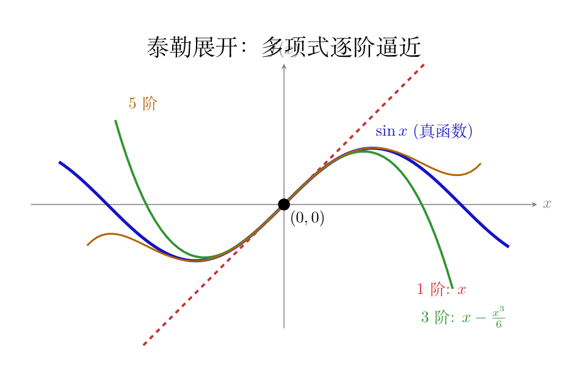

画面： 你有一条弯弯曲曲的曲线 $f(x)$，太复杂了不好算。你想找一条简单的多项式来代替它——至少在某个点 $x=a$ 附近，让它和原曲线"长得很像"。
怎么做到？一层一层地逼近：
第 0 级——常数近似：经过同一点。 最简单的近似就是一条水平线，让它和原曲线在 $x=a$ 处相交：
$$f(x) \approx f(a)$$这就保证了两条线经过同一点。但在那点附近，水平线很快就偏离了原曲线——因为原曲线有坡度，水平线没有。
第 1 级——线性近似：切线。 加上坡度修正：让近似曲线不仅经过同一点，而且在 $x=a$ 处的斜率也一样：
$$f(x) \approx f(a) + f'(a)(x-a)$$这就是切线方程。两条线现在相切——既经过同一点，又有同样的坡度。在 $x=a$ 极近处，切线已经非常接近原曲线了。但稍微走远一点，切线是直的，原曲线却是弯的——两者还是会分开。
第 2 级——二次近似：加上弯曲。 再加一个"弯曲修正项"，让近似曲线在 $x=a$ 处的二阶导数（弯曲程度）也和原曲线一样：
$$f(x) \approx f(a) + f'(a)(x-a) + \frac{f''(a)}{2}(x-a)^2$$二次项 $(x-a)^2$ 是一条抛物线——它天然有弯曲。现在两条线在 $x=a$ 处：经过同一点 ✓、坡度相同 ✓、弯曲程度相同 ✓。附近的一小段几乎完全重合。
规律看出来了：每加一级，就多匹配一阶导数——第 2 级已经把"弯曲"也对齐了。那"一般第 $n$ 级"长什么样？先别急着要公式，拿一个真函数算一遍，公式自己会冒出来。
拿一个你能手算的函数走一遍：$f(x) = 2x^3 - 5x^2 + 7x + 1$，在 $a = 0$ 处展开。它只用得到 00-11 的幂函数求导规则（$x^n \to n x^{n-1}$），不需要任何新东西。
第一步——把各阶导数在 $a=0$ 处的值算出来。求一次导就降一阶，常数项直接归零：
$$f'(x) = 6x^2 - 10x + 7,\qquad f''(x) = 12x - 10,\qquad f'''(x) = 12$$代入 $x = 0$：$f(0) = 1$，$f'(0) = 7$，$f''(0) = -10$，$f'''(0) = 12$。
第二步——按「第 $n$ 级的系数 = 该阶导数值 ÷ $n!$」把每一项算出来。这条规则为什么长这样，下一步再解释，先照做：
| $n$ | $f^{(n)}(0)$ | $n!$ | 系数 | 这一项 |
|---|---|---|---|---|
| 0 | 1 | $1!=1$ | 1 | $1$ |
| 1 | 7 | $1!=1$ | 7 | $7x$ |
| 2 | $-10$ | $2!=2$ | $-5$ | $-5x^2$ |
| 3 | 12 | $3!=6$ | 2 | $2x^3$ |
四项加起来：$1 + 7x - 5x^2 + 2x^3$——正好还原原来的函数。这不是巧合：$-10 \div 2 = -5$，$12 \div 6 = 2$，原函数的系数本来就只有这几个数。除以 $n!$ 就是把求导时被放大出去的倍数除回来。
第三步——$n!$ 的来历：幂函数求导会一路「掉因子」。看 $x^3$ 被求三阶导的全过程，每次求导都把"当前的次数"掉下来乘到前面去：
$$x^3 \xrightarrow{\ d/dx\ } 3x^2 \xrightarrow{\ d/dx\ } 3\cdot 2\,x \xrightarrow{\ d/dx\ } 3\cdot 2\cdot 1 = 6 = 3!$$所以 $x^n$ 求 $n$ 次导，前面挂着的就是 $n\cdot(n-1)\cdots 1 = n!$。换句话说：项 $c_n(x-a)^n$ 的 $n$ 阶导数是 $c_n\cdot n!$。
而"逐级匹配"要求这一项的 $n$ 阶导数在 $x=a$ 处恰好等于 $f^{(n)}(a)$——两件事一对上：
$$c_n\cdot n! = f^{(n)}(a)\quad\Longrightarrow\quad c_n = \frac{f^{(n)}(a)}{n!}$$分母上的 $n!$ 不是凭空规定出来的，它是求导时掉下来的那堆因子的总和：1 阶掉 1 个（$1!=1$，所以一次项看不见分母），2 阶掉 2 个（$2!=2$，就是二次项那个 2），3 阶掉 3 个（$3!=6$）。
把它写回「逐级逼近」，就是通用公式：
$$f(x) = f(a) + f'(a)(x-a) + \frac{f''(a)}{2!}(x-a)^2 + \cdots + \frac{f^{(n)}(a)}{n!}(x-a)^n + \cdots$$再看一个非多项式的例子：$\sin x$。$\sin$ 的求导是四次一循环——$\sin \to \cos \to -\sin \to -\cos \to \sin$（这条课里还没讲过，此处不证；但用 00-11 的数值微分，取很小的间距用差商去近似，算出来的就是 $\cos$，你可以自己试）。于是
$$f(0)=0,\quad f'(0)=1,\quad f''(0)=0,\quad f'''(0)=-1,\quad f^{(4)}(0)=0,\quad f^{(5)}(0)=1,\ \cdots$$偶数阶全是 0（$\sin$ 是奇函数），所以展开式里只剩奇次项，系数照样按 $1/n!$ 算：
$$\sin x = x - \frac{x^3}{3!} + \frac{x^5}{5!} - \frac{x^7}{7!} + \cdots = x - \frac{x^3}{6} + \frac{x^5}{120} - \frac{x^7}{5040} + \cdots$$取 $x = 1$ 看它准不准（真值 $\sin 1 = 0.841471$）：
| 加到哪一项 | 算出来的值 | 误差 |
|---|---|---|
| $x$ | 1.000000 | $1.6\times 10^{-1}$ |
| 再减 $x^3/6$ | 0.833333 | $8.1\times 10^{-3}$ |
| 再加 $x^5/120$ | 0.841667 | $2.0\times 10^{-4}$ |
| 再减 $x^7/5040$ | 0.841468 | $2.7\times 10^{-6}$ |
每多加一项，误差掉大约两个数量级——这就是"阶数越高、在展开点附近越贴合"的实际含义。

泰勒展开的威力： 如果 $f$ 无限可导，这个无穷级数精确等于原函数（在收敛半径内）。实践中，我们通常只取前几项就够用了——比如后面要讲的中央差分只用到二阶展开，已经足够让 $\epsilon^2$ 项抵消。
import numpy as np
# ===== 数值微分：用代码算坡度 =====
def num_grad(f, x, eps=1e-5):
"""中央差分：往前走一丁点，往后退一丁点，算平均坡度
(f(x+eps)-f(x-eps)) / (2*eps)
精度比单边高：单边只看"往前"，中央看了"前后"然后取平均，误差抵消了一部分
"""
return (f(x + eps) - f(x - eps)) / (2 * eps)
# 测试 f(x)=x²，理论导数 = 2x
def sq(x):
return x ** 2
for x in [1, 2, 3]:
# 数值近似
n = num_grad(sq, x)
# 理论：f'(x)=2x
t = 2 * x
print(f"数值={n:.6f} 理论={t:.0f}")
# ===== 梯度下降：从山顶走到山谷 =====
# f(x)=x²-4x+4 的最小值在 x=2（f'(x)=2x-4=0 → x=2）
# 站在 x=0 的位置
x = 0.0
# 学习率：每步走 0.1 倍的坡度
lr = 0.1
print(f"\n从 x=0 出发，目标 x=2")
for step in range(30):
# 当前位置的坡度
grad = 2*x - 4
# 沿着坡度反方向走一步
x = x - lr * grad
if step % 5 == 0:
print(f" 第{step:2d}步: x={x:.4f} 坡度={grad:+.4f}")
# 坡度从 -4 逐渐变成 0，x 从 0 逐渐滑到 2代码注释说「误差抵消了一部分」——到底怎么抵消的？用泰勒展开来算。
单边差分（只看往前）：
$$f(x+\epsilon) = f(x) + \epsilon f'(x) + \frac{\epsilon^2}{2} f''(x) + \frac{\epsilon^3}{6} f'''(x) + O(\epsilon^4)$$移项：
$$\frac{f(x+\epsilon)-f(x)}{\epsilon} = f'(x) + \underbrace{\frac{\epsilon}{2}f''(x) + O(\epsilon^2)}_{\text{误差项：首项是 } O(\epsilon)}$$误差的主导项是 $\frac{\epsilon}{2}f''(x)$——和 $\epsilon$ 成正比。$\epsilon$ 缩小 10 倍，误差大约缩小 10 倍。
中央差分（看前后）：写出 $f(x+\epsilon)$ 和 $f(x-\epsilon)$ 两个泰勒展开：
$$ \begin{aligned} f(x+\epsilon) &= f(x) + \epsilon f'(x) + \frac{\epsilon^2}{2} f''(x) + \frac{\epsilon^3}{6} f'''(x) + \frac{\epsilon^4}{24} f''''(x) + \cdots \\[4pt] f(x-\epsilon) &= f(x) - \epsilon f'(x) + \frac{\epsilon^2}{2} f''(x) - \frac{\epsilon^3}{6} f'''(x) + \frac{\epsilon^4}{24} f''''(x) - \cdots \end{aligned} $$相减：$f(x+\epsilon) - f(x-\epsilon)$：
关键：相减时 $\epsilon^2$ 项同号抵消了！剩余误差主导项是 $\frac{\epsilon^2}{6}f'''(x)$——和 $\epsilon^2$ 成正比。$\epsilon$ 缩小 10 倍，误差缩小 100 倍。这就是为什么中央差分比单边差分高一个精度量级。
直观理解：单边差分就像只看了看你前方一毫米的地形，就猜整条路的坡度——局部信息有限。中央差分同时看了前方和后方，左右信息对称，把「地形弯曲」带来的偏差对消掉了。